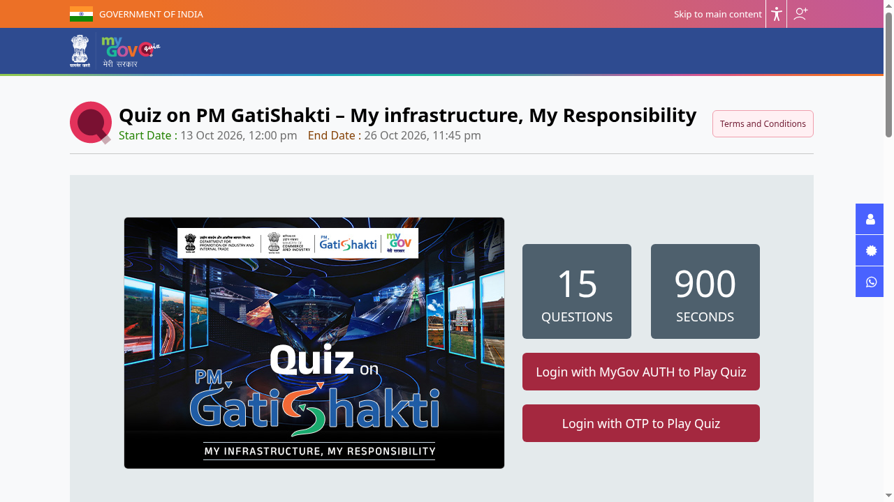

PM GatiShakti Quiz 2026 on MyGov: e-certificate, ends 26 October
The Logistics Division of DPIIT (Ministry of Commerce and Industry) and MyGov are running a quiz on PM GatiShakti for its 5th anniversary. It is open to all Indian citizens, and every participant gets an e-certificate. The quiz runs until 26 October 2026, 11:45 PM.

Official publisher artwork hosted by its publisher. Official source. Independent guide, not affiliated or sponsored. Artwork and trademarks belong to their owners.
Quiz details
- Dates: 13 October 2026, 12:00 PM to 26 October 2026, 11:45 PM
- 15 questions in 900 seconds (15 minutes). The timer starts when you click Play Quiz
- Topics: India's infrastructure, connectivity and PM GatiShakti, the national master plan launched on 13 October 2021 to plan roads, railways, airports, ports and waterways together
- Reward: e-certificate for all participants
Rules to read
- Open to all Indian citizens. One entry per person
- Staff connected with organising the quiz, and their immediate family, are not eligible
- Unfair means, impersonation or double participation make the entry void
- Proof of submission is not proof of receipt. The organisers' decision is final
How to play: step by step
Checked on the live MyGov quiz pages on 19 October 2026.
- Open the official quiz page: quiz.mygov.in/quiz/quiz-on-pmgatishakti. The page shows the quiz banner, end date (26 October 2026, 11:45 PM), 15 questions and 900 seconds.
- Tap Login with OTP to Play Quiz (or Login with MyGov AUTH). If the page shows "Closed", log in first - it usually opens after login.
- New to MyGov: register with MyGov Auth or with DigiLocker (MeriPehchaan single sign-on). Already registered: enter your email or mobile number and tap Request OTP.
- Enter the OTP sent to your email/mobile to log in.
- Come back to the quiz page, read the Terms and Conditions, then click Play Quiz - the 15-minute timer starts when you click.
- Answer the 15 questions and submit. One entry per person.
- After you finish, download your e-certificate of participation.


Steps 4 to 7 happen inside your own login, so they are not shown as screenshots.
Video guides
We searched YouTube on 19 October 2026 for a step-by-step participation video for this quiz in English and in Malayalam. We could not verify one that covers this quiz and the current MyGov portal, so we are not linking any rather than risk an outdated or unrelated video.
We read the quiz page and all 12 terms on 17 October 2026. We did not take the quiz.
Sources: Quiz on PM GatiShakti on MyGov. Checked 17 October 2026; participation steps and video search re-checked 19 October 2026. This is an AiCoN explainer, not a government publication.